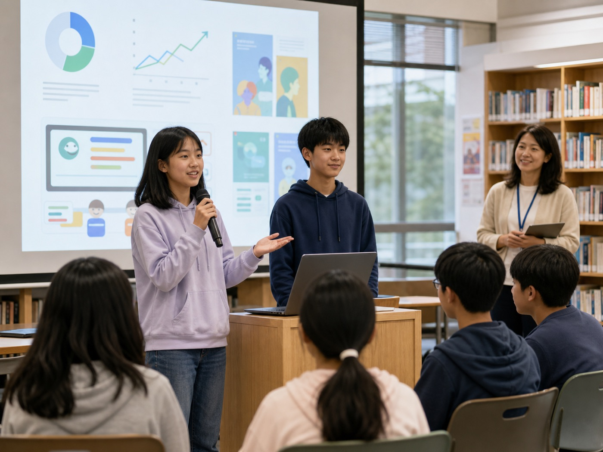
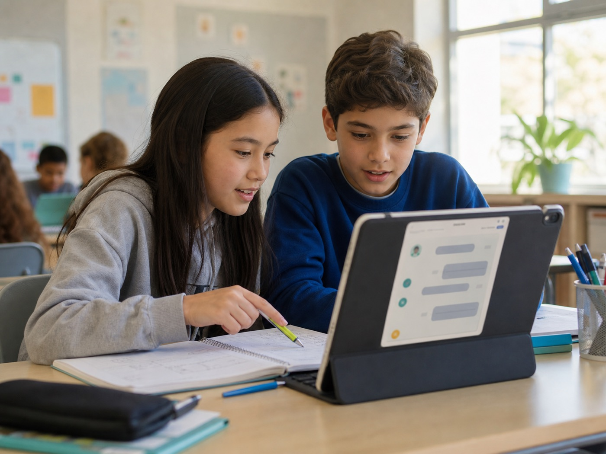
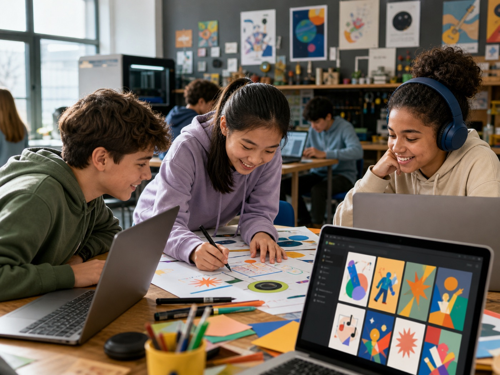

把“我不会”改成一个好问题
用提示词训练器，把模糊问题变成 AI 能真正帮上忙的任务。
去训练9-16 岁青少年 AI 素养学习系统
从作业卡住、英语不敢说、作文没灵感，到校园海报、定制歌曲和项目路演。孩子在 16 个任务里学会提问、判断、创作与负责。

课程定位
AI 不是万能答案机。这个网站把课程设计成一个学习系统：孩子先遇到真实问题，再学习如何向 AI 提问、如何检查结果、如何修改作品，最后说清楚“我做了什么，AI 帮了什么”。
学习路线
同一套 16 课可以服务不同年龄段。9-12 岁更适合故事化和模板化，13-16 岁可以加入事实核查、数据分析和项目路演。
场景插图
这些插图对应课程里的真实任务，可以作为课堂导入、公众号配图或招生页视觉。每张图都避开真实儿童照片和学校隐私，适合直接放在课程内容里。

不问“答案是什么”，而是请 AI 一步步提问、提示下一步。
让 AI 扮演校园访客，孩子一轮一轮开口表达。

把校园活动变成海报、歌词、音乐风格和封面概念。

学会识别 AI 幻觉、隐私风险、版权和作业诚信边界。
把真实校园问题做成方案、图表、展板和 3 分钟展示。
课程地图
每张课程卡都包含真实场景、AI 科普点、课堂活动、学生作品和推荐提示词。点开卡片可以查看完整详情，也可以标记完成。
互动训练器
孩子最常说“我不会”“帮我写一下”。这里把它拆成 5 个输入框，让孩子练习把需求说清楚。
案例实验室
这些案例可以直接拿到课堂里演示。每个案例都展示“普通问法”和“更好的问法”，让孩子看见提示词质量如何影响 AI 输出。
AI 安全小测
5 道判断题覆盖隐私、作业诚信、事实核查、版权和陪伴边界。提交后会看到每题反馈。
结课项目
课程最终不是一张证书，而是一组能被展示、复盘和讲述的作品。孩子要能说出问题、过程、AI 帮助、个人判断和最终修改。